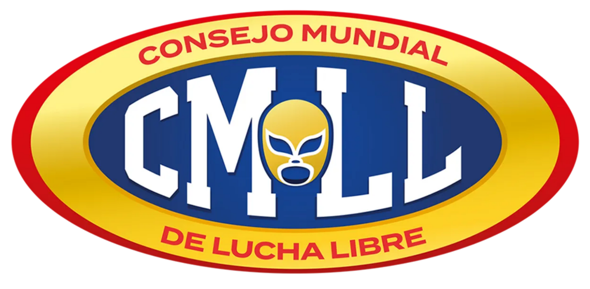

Click here to return to the card overview.Two-out-of-three-Falls Match With Captain's Rules: Eddie Guerrero, Chavo Guerrero and Jaque Mate beat Los Brazos (Brazo De Oro and Brazo De Plata) and Rayo De Jalisco Jr. 3 falls to 0: x Chavo Sr. beat B. De Plata via the Moonsault in 0:20:19 x Chavo Sr. beat B. De Oro via the Moonsault in 0:22:17 Rating: ** Click here to see highlights. Negro Casas pinned Black Magic with the Casita in 0:26:49. Rating: **** 1/2 Click here to see highlights. Art Barr pinned Angel Azteca with the Frog Splash in 0:12:18. Rating: *** 1/4 Click here to see highlights. Two-out-of-three-Falls Match With Captain's Rules: Ultimo Dragon, Volador and Blue Panther beat El Dandy, MS-1 and Pierroth Jr. 2 falls to 0: x B. Panther beat Dandy via a power bomb in 0:25:59 Rating: ** 3/4 Click here to see highlights. Konnan defeated Vampiro Canadiense by disqualification in 0:14:30. Rating: * 1/4 (Konnan retained the Mexican National Heavyweight Championship.) Click here to see highlights. Card rating: ** 1/2 Match observations: Event: Arena Puebla — Monday, July 8, 1991 Attendance: ~4,200 Gate Estimate: ~140,000 pesos ARENA PUEBLA ERUPTS AS GUERREROS DOMINATE AND CASAS STEALS THE SHOW! A packed house inside historic Arena Puebla witnessed a night of high drama and unforgettable action on July 8, as the Guerrero dynasty proved once again why they are among the most dangerous families in lucha libre. Chavo Guerrero Sr., wrestling with the precision of a master craftsman, soared to victory twice with his devastating moonsault, sweeping Los Brazos and Rayo de Jalisco Jr. in straight falls. But the match that had fans on their feet was the technical masterpiece between Negro Casas and Black Magic. For nearly half an hour, the two maestros traded holds, counters, and insults until Casas snatched victory with his lightning-fast Casita. Many in attendance called it one of the finest singles bouts Puebla has seen all year. Rudo sensation Art Barr continued his meteoric rise, crushing Ángel Azteca with a picture-perfect Frog Splash, while the trio of Blue Panther, Último Dragón, and Volador dazzled the crowd with a blend of mat wrestling and aerial artistry, dispatching El Dandy’s squad in two straight falls. The night ended in controversy as Konnan retained the Mexican National Heavyweight Championship when Vampiro Canadiense lost his temper and got himself disqualified. Their rivalry is far from over, and Arena Puebla may not be big enough to contain the explosion when these two collide again. Promoter Notes: Overall Crowd Energy: Strong for a Monday night; peaked during Casas vs. Black Magic. Match-by-Match Notes 1. Guerrero/Guerrero/Mate vs. Los Brazos & Rayo de Jalisco Jr. - Clean 3–0 sweep elevated Chavo Sr. and Eddie as top rudo attractions. - Los Brazos still over with the crowd despite the loss; no damage to their drawing power. - Match served well as an opener — good heat, strong pacing. 2. Negro Casas vs. Black Magic - Best match of the night; crowd fully invested. - Casas continues to be one of the most reliable workers on the roster. - Recommend future rematches or a short program; chemistry is excellent. 3. Art Barr vs. Ángel Azteca - Barr’s charisma continues to connect with Puebla audiences. - Azteca remains a dependable técnico for mid-card showcases. - Frog Splash finish got a strong reaction. 4. Último Dragón/Volador/Blue Panther vs. Dandy/MS-1/Pierroth Jr. - Solid trios bout; Panther especially over. - Dragón’s early high-flying style is getting attention — potential future push. - Rudos worked professionally but lacked a standout moment. 5. Konnan (c) vs. Vampiro Canadiense — Mexican National Heavyweight Title - DQ finish protected both men but left the crowd wanting a decisive outcome. - Feud remains hot; recommend building toward a stipulation match to settle it. - Konnan continues to be a reliable draw; Vampiro’s popularity rising quickly. General Notes - Strong card for a Monday; no injuries reported. - Merchandise sales up slightly due to Guerrero family interest. - Recommend returning Casas vs. Black Magic to Puebla within 4–6 weeks. Arena Puebla, Puebla, MX 7.8.1991